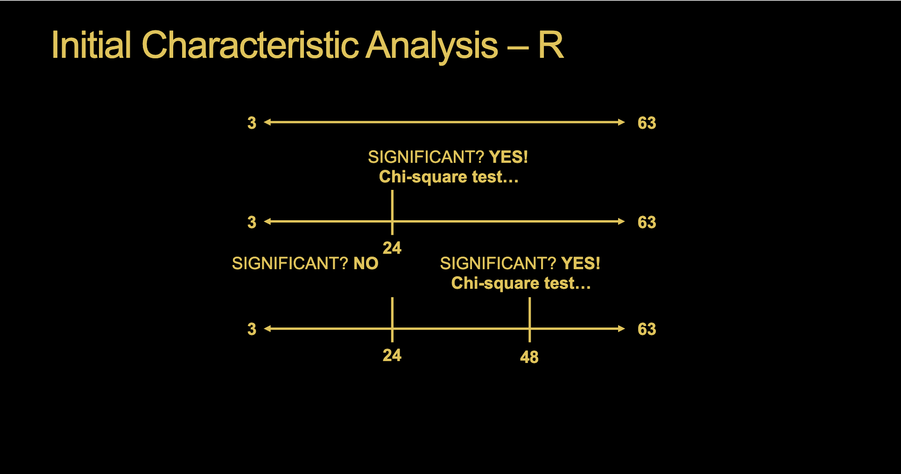
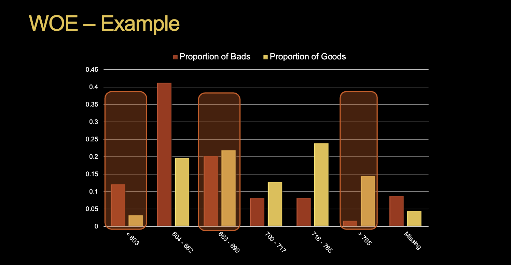

1 Variable Grouping
Scorecards end up with only just groups within a variable.
Objectives:
- Eliminate weak characteristics or those that do not conform to good business logic.
- Group the strongest characteristics’ attribute levels in order to produce a model in scorecard format.
In R, we have the smbinning package and in Python we have the scorecard or OptBinning packages.
Goals:
- Useful for understanding relationships.
- Modeling nonlinearities similar to decision trees.
- Dealing with outliers contianed in the smallest / largest group.
- Missing values tend to typically go in their own group.
1.1 Initial Characteristic Analysis
Need a starting point for the grouping / binning. We tend to use quantiles for this initial approach. The idea is to pre-bin the interval variables into a number of user-specified quantiles / buckets for fine detailed groupings. We can then aggregate the fine detailed groupings into a smaller number to produce coarse groupings using chi-squared tests to combine groups. Only groups next to each other are grouped.
In R, we can use decision trees to select cut points for the variables. Specifically, we use conditional inference trees. CART methods have inherent bias as variables with more levels are more likely to be split on using Gini and entropy. CIT method adds an extra statistical step before splits occur using statistical tests of significance (Chi-square) to inform splits.
Each time we split, we use statistical tests on our response from the chunks created from the last split.

Cutoffs may be rough from decision tree combining. We can optionally override these generated groups to conform to business rules, but overrides may make groups suboptimal.
2 Weight of Evidence
Weight of evidence (WOE) measures the strength of the attributes of a characteristic in separating good and bad accounts. WOE is based on comparing the proportion of goods to bads at each attribute level.
\[ WOE_i = \log(\frac{Dist.Good_i}{Dist.Bad_i}) \]
- \(Dist.Good_i = \frac{\text{# Good in group i}}{\text{Total # Good}}\)
- \(Dist.Bad_i = \frac{\text{# Bad in group i}}{\text{Total # Bad}}\)
We’re looking for big differences in WOE between groups. With interval variables we are looking for monotonic changes within an attribute. Going back and forth between positive and negative values of WOE typically signal variables have trouble separating good vs. bad. However, this is not always required it it makes business sense–credit card utilization for example.

WOE from Figure 2 is essentially looking at the difference between the proportion of bads and proportion of goods on a natural log scale. We can see that there is a monotonically increasing difference up until the missing category. As we move up through the different categories, there is a greater proportion of goods.
- WOE approximately 0 implies % of good is approximately equal to % of bad so group doesn’t separate good vs. bad well.
- WOE positive implies group identifies people who are good.
- WOE negative implies group identifies people who are bad.
After the binning, quasi-complete separation can still be a problem. We can use adjusted WOE to account for possible quasi-complete separation:
\[ \text{Adjusted} WOE_i = \log(\frac{Dist.Good_i + \eta_1}{Dist.Bad_i + \eta_2}) \]
- \(\eta_1\) and \(\eta_2\) parameters are smoothing parameters that correct for potential overfitting and protect against quasi-complete separation
- Most software just set \(\eta_1 = \eta_2\) and has one parameter
3 Information Value
Across all the categories in this variable, how good do we separate out the 1’s and 0’s? Information value measures the ability of the characteristic to separate goods vs. bads.
\[ IV = \sum_{i=1}^{L} (Dist.Good_i - Dist.Bad_i) \cdot \log(\frac{Dist.Good_i}{Dist.Bad_i}) \]
Overall, bigger is better with information value. Some rules of thumb:
- \(IV < 0.02\): Not predictive
- \(0.02 < IV < 0.1\): Weak predictor
- \(0.1 < IV < 0.25\): Medium predictor
- \(0.25 < IV\): Strong predictor
IV allows us to do variable selection since we are aggregating groups across the entire variable. Using the cutoffs, we can select variables that we should include in our model.
In the world of credit modeling, a hard cutoff for selecting variables is greater than 0.1.
Keep in mind that in R all variables that we are binning must be encoded as factors. smbinning will point out which variables it believes shouldn’t be binned due to not enough unique values or any variables which have no significant splits.
A caveat to the cutoffs is \(IV > 0.5\). At this point, we might believe the variable is over-predicting. An overpredicting example: All previous mortgage decisions have been made only on bureau score so of course bureau score is highly predictive–variable becomes significant. A common practice is to create two models–one with bureau score, one without–and ensemble.
4 Gini Statistic
Gini statistic is an optional technique that tries to answer the same questions as IV–which variables are strong enough to enter the scorecard model?
IV is more in line with WOE calculation and used more often.
- Range is 0 to 100.
- Bigger is better.